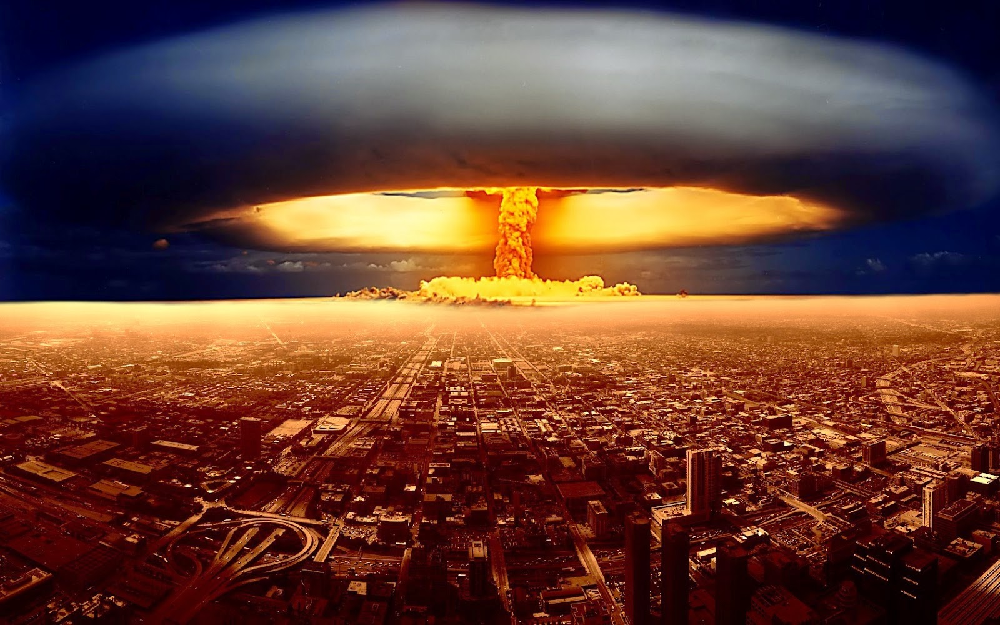

Tipos de Contaminacion
Estos son los tipos de contaminacion
Contaminacion del Agua
Como su nombre lo sugiere, “Contaminación del agua” es el tipo de contaminación que supone la contaminación distintos cuerpos de agua. Varias criaturas acuáticas dependen de estos cuerpos de agua y sus características naturales nutritivos para apoyar su vida. Contaminación del Agua.
Contaminacion Acustica
la contaminación acústica es el tipo de contaminación que se produce por diferentes fuentes de audio que está causando la sensación de irritación, distracción para nuestro medio ambiente. Esta contaminación no es no sólo perturbar el medio ambiente sino que también produce daño a nuestra humanidad.
Contaminacion Luminica
De acuerdo con el Servicio de Parques Nacionales, a la luz de los Estados Unidos por encima de lo que se requiere es llamada contaminación lumínica. La Asociación Internacional Cielo Oscuro define la contaminación lumínica a los efectos nocivos de la luz artificial en la atmósfera de la Tierra y el medio ambiente.
Contaminacion Termica

Es un hecho bien conocido que la quema de combustibles fósiles en centrales eléctricas, hornos industriales y motores de vehículos causa la contaminación del aire. Sin embargo, un menor impacto conocido asociado con estos procesos de generación de energía es la contaminación térmica. La contaminación térmica se refiere a la adición de grandes cantidades de calor residual para el medio ambiente, las causas de la contaminación térmica son casi las mismas que las que causa la contaminación del aire.
Contaminacion Radioactiva
La contaminación radioactiva disminuye con el tiempo, por lo que los residuos se aísla típicamente y se almacenan durante un período de tiempo hasta que ya no representa un peligro. El período de tiempo de residuos se deben almacenar depende del tipo de residuos. Bajo nivel de residuos con bajos niveles de radiactividad por masa o volumen (por ejemplo, algunos residuos comunes radiactivas médicas o industriales) puede ser necesario almacenar durante sólo unas horas, días o meses, mientras que residuos de alto nivel (como el combustible nuclear gastado o subproductos de reprocesamiento nuclear) deben ser almacenados durante miles de años. Actuales enfoques principales para la gestión de residuos radiactivos han habido separación y almacenamiento de residuos de vida corta, cerca de la superficie de eliminación de baja y algunos residuos de media, y el entierro profundo o transmutación de los de vida larga y de alto nivel residuos.
Contaminacion del Suelo
La contaminación del suelo se refiere a la contaminación del suelo por medio de exceso de fertilizantes, productos químicos, insecticidas, herbicidas, pesticidas, etc provocan contaminación del suelo en la disminución de la calidad del suelo y es causada por la erosión del suelo, el exceso o déficit de humedad, disminución de la nutrientes para las plantas o microorganismos del suelo, y la fluctuación de la temperatura alta.


 1
1 2
2 3
3 4
4 5
5